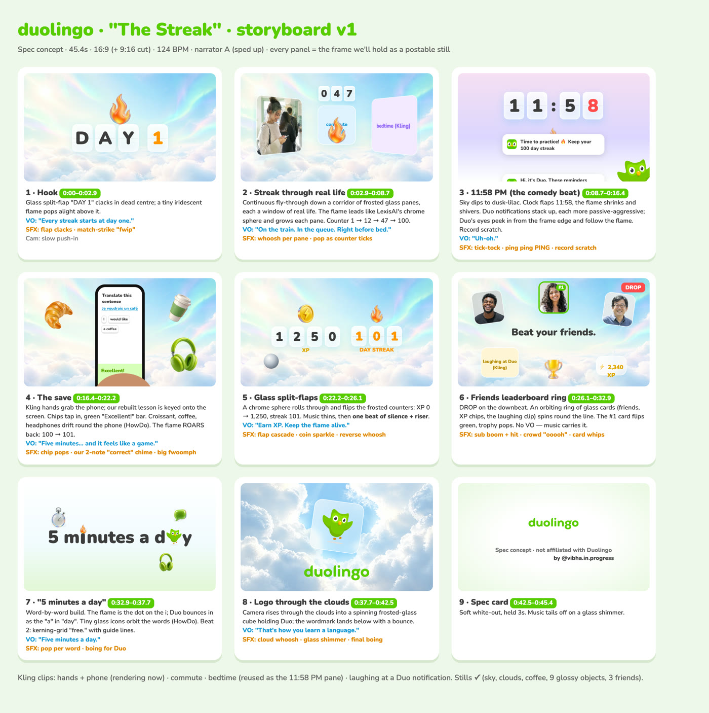
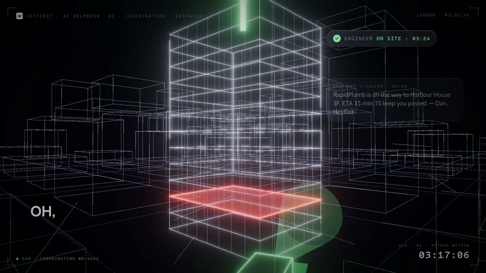

Before you start
What you need
Claude Code is built into the desktop app. It can install tools, save files and render video, which normal chat can't. You sign in with your Claude account.
For the voices. Sign up here (my affiliate link). The S2.1 Pro API is free until 30 November 2026.
Screen-record 3 to 6 product videos or motion reels from Dribbble, Behance or your feed. They're for study only, not for copying.
The first setup takes longer. After that, my videos took under 30 minutes each, mostly me giving notes.
Honest bit: Claude drafts, you direct. Every step ends with Claude showing you something to approve. Your taste and your notes are what make the video good.
Step 1
Give Claude a voice with Fish Audio
Two things go in once: the Fish Audio MCP server (so Claude can browse voices and generate speech from your account) and the official Fish Audio skill pack (so it writes correct Fish Audio code). Paste this and follow what Claude tells you.
I'm not technical, so do everything for me. Connect Fish Audio to this project so you can voice my videos. 1. Add the Fish Audio MCP server: claude mcp add --transport http fish-audio https://api.fish.audio/mcp Then tell me to run /mcp so I can sign in to my Fish Audio account. It uses OAuth, so no API key is needed for this part. 2. Install the official Fish Audio skill pack: npx skills add https://docs.fish.audio It adds two skills, fish-audio-sdk and fish-audio-api, so you write correct Fish Audio code. 3. For scripted voiceovers, use the free model s2.1-pro-free through the Fish Audio API. Create a .env file and open it for me so I can paste my key from fish.audio/app/api-keys. Never print the key, never put it in code or in chat. 4. Test everything: generate one 5-second line in a warm English voice, play it for me, and tell me the voice name, how long it took and where the file is saved. If I need to click anything or restart the app, tell me exactly what, step by step.
Free until 30 Nov 2026. Fish Audio's S2.1 Pro model is a free API under their fair use policy, model string s2.1-pro-free. This is from Fish Audio's own blog.
Two kinds of credit. The MCP connection uses your Fish Audio plan credits, like the web app. The free S2.1 Pro model runs through the API with your key. Prompt 01 sets up both.
What you should see
- Claude says the fish-audio MCP server is added and asks you to run /mcp to sign in.
- Two new skills: fish-audio-sdk and fish-audio-api.
- A 5-second test clip plays, with the voice name and file path.
Step 2
Let Claude study every frame
Drop your screen recordings into one folder. Claude pulls frames, finds every cut and reads contact sheets, so it learns the pace, palette and moves of the work you love, then writes it down as rules.
I'm not technical, so do everything for me. You're my motion design director. In [FOLDER, e.g. ~/motion-refs/] there are [NUMBER] screen recordings of motion design videos I love. Study every one of them frame by frame before you write anything. If ffmpeg isn't installed, install it first. 1. Extract frames: ffmpeg -i "$f" -vf "fps=4,scale=1280:-1" frames/$name/%04d.jpg 2. Find every cut: ffmpeg -i "$f" -vf "select='gt(scene,0.3)',showinfo" -f null - and log the timestamps 3. Make a contact sheet per video: ffmpeg -i "$f" -vf "fps=1,scale=480:-1,tile=6x4" sheets/$name.jpg, then read every sheet For each video give me: the palette (hex), the type (families, weights, sizes), every camera move, the transition at each cut, easing and pace (average shot length in seconds), signature moves worth stealing and moves to avoid. Finish with ONE house style I can reuse: 10 rules, each pointing to the frame it came from. Save it as house-style.md and show it to me.
What you should see
- A short breakdown per video: colours, fonts, camera moves, cut timings.
- house-style.md with 10 rules, each linked to a real frame.
Step 3
Storyboard before you build
This is where you save hours. You approve the story and layout in grey boxes before a single colour frame exists.
Using house-style.md, storyboard a [30-45]s product video for [PRODUCT] ([WEBSITE]). First pull the brand palette, fonts and logo from the website. Give me a beat table: time, scene, on-screen text, voiceover line, motion, sound effect. Cut every 1.5 to 3 seconds on a [122] BPM grid, with the drop at [12.0]s. Story: problem, then the turn, then a product tour, then proof, then the logo. Then wireframe every scene as a simple grey-box frame and render ONE storyboard sheet so I can approve the layout. Don't build anything in colour until I say go.

What you should see
- A beat table with times, lines and sound effects.
- One storyboard sheet to approve.
Step 4
Build it in code
Claude writes the video as web code and renders it to MP4 with HyperFrames, a free open-source renderer. Because it is code, every edit is a sentence, not an afternoon in an editor.
I'm not technical, so do everything for me. Build the video from the storyboard I approved. Use HyperFrames (free and open source, github.com/heygen-com/hyperframes) to write every scene as HTML and render it to MP4. Install it if it isn't there. Follow house-style.md exactly. Recreate the product's screens in code instead of using blurry screenshots, so every frame stays sharp. Output 1920x1080 at 30fps, plus a 1080x1920 vertical version for Reels. Leave clearly marked gaps where the voiceover goes. Before rendering, show me a contact sheet of the key frames and wait for my notes.
Make it better
- Give notes like a creative director: "faster cuts in the middle", "the logo needs more air".
- Ask for a 10-second preview of any scene before a full render.
Step 5
Hold voice auditions
Claude casts the voice for you. It picks five Fish Audio voices, has each one read the same lines, checks every word, then waits for you to choose.
Audition voices for this script. Pick 5 Fish Audio library voices that fit [CHARACTER, e.g. a calm British helpdesk agent]. No celebrity clones.
Have each voice read the same 2 lines: one emotional, one businesslike, so I can hear the range.
Save them as voice-1-[name].mp3 to voice-5-[name].mp3 in audio/auditions/.
Give each one a one-line note: tone, pace, what it's best for.
Transcribe every take with Whisper to check every word came out right.
Then wait for me to pick.What you should see
- Five short MP3s with a one-line note each.
- You pick one. In my reel, it was "Go with 2, Alok."
Step 6
Direct the voice acting
This is the part that makes it sound human. Fish Audio S2.1 Pro takes emotion tags written like notes to a voice actor, and Claude places them line by line.
Now direct the performance like a voice actor, using the voice I picked. Add Fish Audio S2.1 Pro emotion tags in square brackets wherever the feeling changes. Pair a physical cue with an emotion, for example [sighs] [frustrated], [empathetic], [calm], [surprised]. Tags affect everything after them, so place them exactly where the mood shifts. Vary pace and pauses to match the beat sheet. Re-generate any line that sounds flat. Check every take with Whisper, then show me the script with the tags so I can approve it.
A real example from my Heyfixit film
- Caller: [frustrated] Hello? Finally! There's water pouring out from under the kitchen sink on the third floor!
- Dan: [empathetic] I'm so sorry, that sounds really stressful. I'm Dan, from the Heyfixit helpdesk, and I've got you.
- Caller: [surprised] Oh! He's here already? ...Brilliant.
Step 7
Score it with free Mixkit sound
Music and sound effects are half of a good product video. Mixkit has free music and sound effects you can use in commercial social videos, and Claude reads the license first.
Be my sound designer for this video. Use Mixkit (mixkit.co) as the ONLY source for music and sound effects.
1. First read Mixkit's Sound Effects Free License and Stock Music Free License and confirm they cover commercial use in social video.
2. From my beat sheet, list every sound we need: a whoosh before each transition, a thump on hard cuts, pops for on-screen UI, a riser into the drop, and one music bed at [122] BPM.
3. Search mixkit.co for each one, download the best 2 options into audio/sfx/ and audio/music/, and log the title, URL and license of every file in CREDITS.md.
4. Detect every cut and beat in my render with ffmpeg, place the sound effects on them and duck the music 8 dB under the voiceover.
5. Master to -14 LUFS and send me a 10-second preview before the full export.What you should see
- A CREDITS.md listing every sound with its URL and license.
- A 10-second preview with whooshes, thumps and pops on the cuts.
Step 8
Render the final video
Everything comes together: picture, voice and sound, timed to the beat.
Final pass. Put it all together: the approved video, the Fish Audio voiceover and the Mixkit sound. Line the voiceover up with the beat sheet so every line lands on its scene. Render the final MP4 at 1080p, 30fps, in both 16:9 and 9:16. Then play it back in your head beat by beat, fix anything that feels rushed or off the grid, and tell me what you changed. Last, give me a list of the 3 frames you'd use as thumbnails.
What you should see
- A 16:9 and a 9:16 MP4, ready to post.
- A short list of what Claude fixed in its final pass.
Real result
One video, 16 leads in a week

That's my result, not a promise. Your product, offer and audience decide yours.
If something goes wrong
Quick fixes
- Claude says it can't find the fish-audio tools
- Run /mcp in the Code tab and sign in to Fish Audio again. Then start a new session.
- The voice sounds flat
- Ask Claude to move the emotion tag right before the word where the feeling changes, and to re-generate just that line.
- A word is mispronounced
- Ask Claude to spell it the way it sounds in the script (for example "Hey-fix-it") and re-check with Whisper.
- The video feels slow
- Say "cut every 1.5 seconds and keep the camera moving". Pace is the fastest fix there is.
- Using it for client work
- The free S2.1 Pro API has no uptime guarantee, and Fish Audio says some commercial uses may have restrictions. Check their pricing and rate limits page, or use a paid plan, before client work.
Everything linked
The links
- Fish Audio (my affiliate link)fish.audio
- Fish Audio MCP server docsdocs.fish.audio/overview/mcp
- Fish Audio skill pack for coding agentsnpx skills add https://docs.fish.audio
- S2.1 Pro free API, free until 30 Nov 2026fish.audio/blog/s2-1-pro-free-api
- Get your Fish Audio API keyfish.audio/app/api-keys
- Mixkit free licensesmixkit.co/license
- HyperFrames, the free video renderergithub.com/heygen-com/hyperframes
- Claude desktop appclaude.ai/download